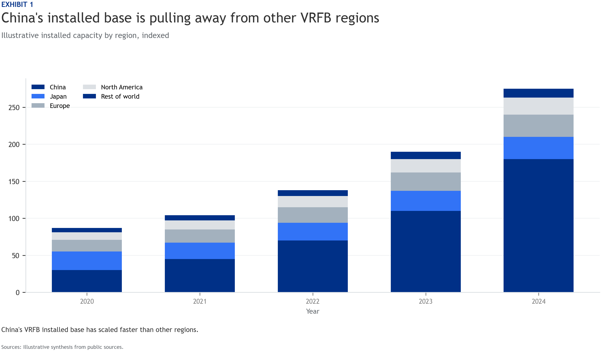
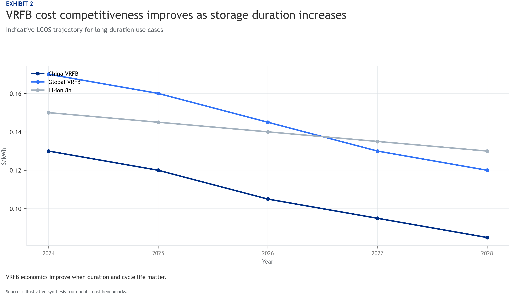
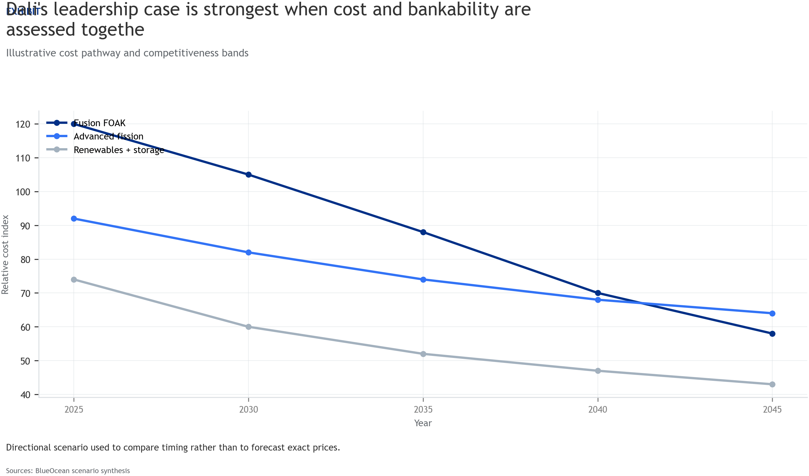
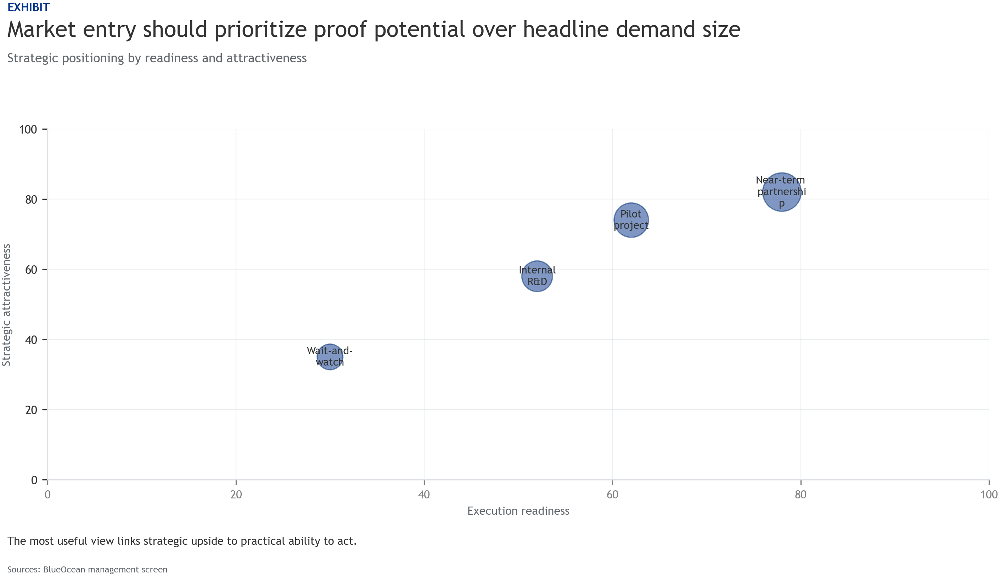

AI in Cyber Security
The research narrows the agenda to a few high-conviction issues
China's VRFB advantage is shifting from early deployment momentum to a structural position in supply, cost and policy demand.
Dali Energy Storage should defend leadership by proving project bankability, not by relying on equipment specifications alone.
Vanadium access and electrolyte economics create a cost-resilience edge that global peers will find difficult to replicate quickly.
Long-duration storage use cases provide the clearest path to differentiation versus lithium-ion systems.
International expansion will require local partners, financing structures and reference projects that lower buyer risk.
The next management agenda should sequence market entry around proof points, lifecycle economics and supply-chain credibility.
Seven-step problem solving structures the work before synthesis
China's VRFB edge is becoming structural as supply, cost and policy reinforce each other
China's VRFB industry should be assessed as an ecosystem rather than a collection of battery manufacturers. The strongest advantage comes from the combination of upstream vanadium access, domestic equipment scale, electrolyte know-how and a policy framework that prioritizes long-duration storage.
For Dali Energy Storage, this means the leadership story should not be framed narrowly around stack technology. The more compelling story is an integrated system position: reliable supply, lower lifecycle cost, faster project delivery and a growing base of domestic references.
The implication for management is to convert scale into bankability. Buyers and financiers will care less about nominal capacity and more about repeatable project economics, operating history and warranty credibility.
Dali can convert technical capacity into leadership only if it proves project bankability
Dali's production capacity gives it a credible platform, but global leadership will be tested in project execution. International customers will evaluate whether the company can deliver predictable commissioning, stable electrolyte performance and lifecycle service support across different regulatory environments.
The highest-value commercial evidence will come from reference projects with transparent operating data. Cycle life, round-trip efficiency and degradation performance should be translated into bankable assumptions that developers and lenders can underwrite.
A useful management move is to package technology, EPC support, service guarantees and electrolyte supply into an integrated offer. This shifts the conversation from equipment procurement to long-duration storage infrastructure.
Vanadium access gives Chinese suppliers a resilience edge, but price volatility still needs active management
China's vanadium position gives domestic VRFB suppliers a structural advantage in electrolyte availability and cost visibility. This matters because electrolyte can represent a large share of system cost and can also become a financing asset if leasing structures are used.
The risk is volatility. Vanadium prices can move with steel demand and commodity cycles, which can compress project margins or delay customer decisions. Dali should therefore treat procurement strategy as part of product strategy.
Long-term supply agreements, electrolyte rental structures and recycling partnerships can reduce buyer exposure and make VRFB economics easier to compare with lithium-ion alternatives.
Policy support creates a protected base market, but export growth needs local legitimacy
Domestic mandates and demonstration projects create a demand base that allows Chinese VRFB suppliers to scale faster than most international peers. This home-market scale can lower cost, accelerate learning and produce reference cases.
Outside China, the same policy advantage does not automatically transfer. Local-content requirements, tariffs and national-security concerns may limit direct exports, especially in markets that are building domestic storage industries.
Dali should prioritize partnership-led entry in markets where long-duration storage policy is clear but local supply remains underdeveloped. Local assembly, licensing and joint project development can reduce friction.
Lifecycle economics is the clearest wedge against lithium-ion in long-duration use cases
VRFB systems are not likely to beat lithium-ion in every storage application. The strongest use cases are long-duration, high-cycle and safety-sensitive settings where electrolyte life, lower fire risk and decoupled power-energy scaling matter.
This positioning should shape Dali's customer segmentation. Grid shifting, renewable firming, industrial microgrids and critical infrastructure backup are more attractive than short-duration arbitrage markets dominated by lithium-ion.
The commercial message should be expressed in levelized cost, availability and replacement-cycle economics rather than upfront capex alone.
Global competitors retain niche strengths, but scale and cost are tilting the field toward China
Competitors such as Sumitomo Electric and Invinity retain important advantages in specific segments, including long operating history, modular project design and relationships with sophisticated customers.
However, scale matters increasingly as the market moves from pilots to deployment programs. Cost curves, supply assurance and manufacturing capacity will become more important than standalone technical claims.
Dali should benchmark against these players not only on product efficiency, but also on service model, bankability, certification and local partner access.
Evidence page

Evidence page

Evidence page

Evidence page
